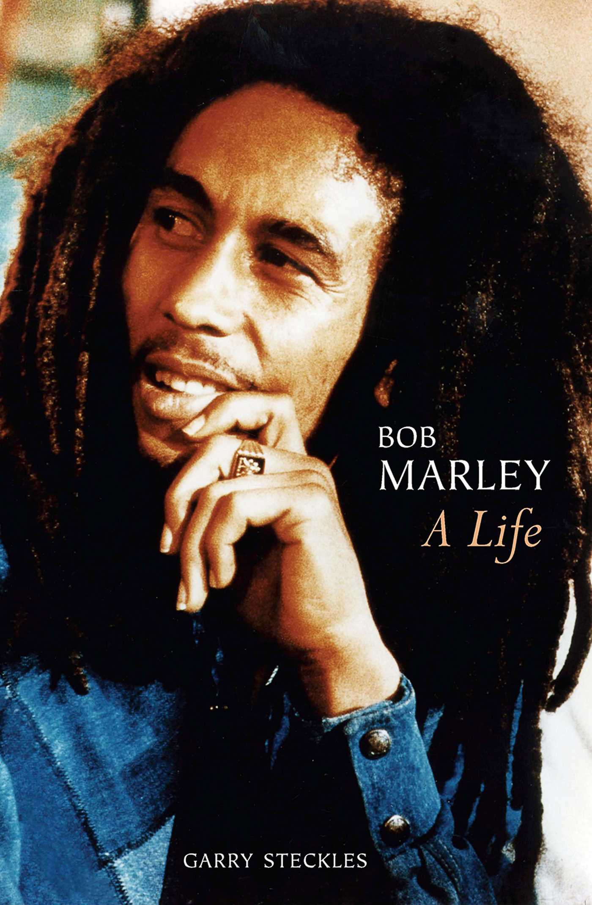

Favourite Quote
Emancipate yourself from mental slavery
Timeline
- Early life and rise to Fame:
- 1945: Bob Marley is born in Nine Mile, Jamaica.
- 1963: Forms the band The Wailers with Peter Tosh and Bunny Wailer.
- 1972: Signs with Island Records and releases the album "Catch a Fire."
- 1974: The Wailers gain international recognition with the album "Natty Dread."
- Reggae Icon and Political Involvement
- 1976: Marley is injured during an assassination attempt in Jamaica.
- 1977: Releases the album "Exodus," which includes hits like "One Love" and "Jamming
- 1978: Performs at the One Love Peace Concert in Kingston, promoting unity during a time of political tension.
- 1980: Releases the album "Uprising" and tours in support of it.
- Battle With Cancer and Legacy
- 1981: Marley's health deteriorates as he battles cancer.
- May 11, 1981: Bob Marley passes away at the age of 36.
- 1984: Posthumously, the album "Legend" is released, becoming one of the best-selling reggae albums of all time."
- Marley's music continues to influence artists worldwide, and he becomes a cultural and musical icon.
- Posthumous Honours and Recognition
- 1994: Bob Marley is posthumously awarded a Grammy Lifetime Achievement Award.
- 2001: A documentary film, "Bob Marley: Rebel Music," is released.
- 2010: The "Legend: The Best of Bob Marley & The Wailers" album is certified Diamond in the United States.
- Bob Marley's influence on reggae music and the global cultural landscape endures through the 21st century.